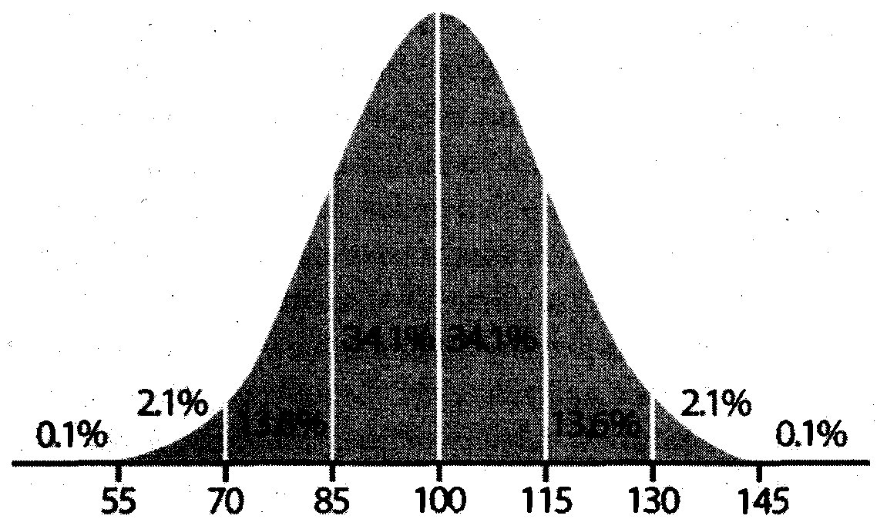

Bu kitabın başlığındaki “aptal” kelimesinin ne anlama geldiğini açıklamakla başlamak istiyorum kitabıma. Önce, tarih sırasına göre, elimdeki bazı sözlüklerde bu kelimeye hangi anlamların verildiğini göstereyim:
Türk Dil Kurumu Lügat Kolu, 1945, Türkçe Sözlük: Cumhuriyet Basımevi, İstanbul, s. 30:
“1. Zekâsı hemen hiç gelişmemiş. 2. Bak. Abdal”
Abdal kelimesinin benim burada ilgilendiğim anlamlarla hiç ilgisi olmadığından onları sıralamıyorum.
Ağakay, M. A., 1966, Türkçe Sözlük, Dördüncü Baskı: Türk Dil Kurumu yayınları: 247, Türk Tarih Kurumu Basımevi, Ankara, s. 43.
“1. Zekâsı hemen hiç gelişmemiş. 2. Bak. Abdal”
Tuğlacı, P., 1974, Okyanus Ansiklopedik Sözlük: Cem Yayınevi Ansiklopedi ve Sözlük Dizisi 1, İstanbul, cilt 1, s. 117.
“s. A. ve Fars.. bedel, bedii > abdal, ebdāl. § 1 Kişilik yapısı ve dolayısıyla aklı ve zekâsı gelişmemiş olan. § 2 i. Genel zekâ bakımından normale yakın olmakla birlikte normalin altında bulunan kimse. § 3 ünl. Küçümseme, hakaret, v. b.. teklifsiz hitap.”
Doğan, D. M. ve diğerleri, 1988, Büyük Türkçe Sözlük: Beyan Yayınları, İstanbul, s. 47.
“[s.] Zekâsı gelişmemiş, yön. alık”
Püsküllüoğlu, A., 1995, Türkçe Sözlük: Yapı Kredi Yayınları, İstanbul, s. 119:
“s. Ar. 1 Zekâsı pek gelişmemiş olan, alık, bön, budala, ahmak (kimse), 2 tkz. ünl. küçümseme belirten seslenme, azarlama.”
Tietze, A., 2002, Tarihi ve Etimolojik Türkiye Türkçesi Lugati / Sprachgeschichtliches und Etymologisches Wörterbuch des Türkei-Türkischen: Simurg, İstanbul ve Österreichische Akademie der Wissenschaften, Wien, c. 1, s. 74.
“akılsız (kimse)”
Ayverdi, İ., 2005, Misalli Büyük Türkçe Sözlük (Prof. Dr. Ahmet Topaloğlu redaksiyon - etimoloji): Kubbealtı Neşriyatı, İstanbul, c. 1 A-G.
“sıf ve i. (Ar. ebdal > abdāl’dan) Davranışlarını kontrol etmekten âciz, zekası kıt, bön, alık (kimse)
Çağbayır, Y., 2007, Ötüken Türkçe Sözlük: Ötüken, İstanbul, c. l, s. 270.
“[Ar. bedel > abdāl] sf. 1. Zekâsı yeterince gelişmemiş olan; ahmak, alık, bön. 2 (ağız) Görgüsüz; aç gözlü. [DS] 3. ünl. Küçümseme sözü
Güncel Türkçe Sözlük ve Yazım Kılavuzu Çalışma Grubu (Akalın, M. ve diğerleri), 2011, Türkçe Sözlük, 11. baskı: Atatürk Kültür, Dil ve Tarih Yüksek Kurumu Türk Dil Kurumu, Ankara, s. 138.
“sf Ar. abdāl. 1. Zekâsı pek gelişmemiş, zekâ yoksunu, alık, ahmak, alık salık. ...2. ünl. tkz. Küçümseme ve azarlama bildiren bir seslenme sözü”
Benim burada ilgilendiğim aptalın günümüzde halk arasında kullanılan anlamı olduğu için Osmanlı Türkçesi veya daha eski sözlüklere bakmayı gereksiz buldum. Yukarıdaki tüm sözlükler aptalın ilk anlamı olduğunda hemfikirler: Birincisi zekâ ve/veya akıl yönünden belli bir ortalamanın altında olan kimse, yani bir sıfat. İkincisi ise, bir hakaret veya küçümseme ifade eden bir ünlem. Benim bu kitapta hiç kimseye hakaret etmek veya kimseyi küçümsemek gibi bir niyetim olmadığı için, benim kullandığım aptal kelimesi bir sıfat olup, anlamı yukarıda yazılı olan anlamların birincisidir. Bu birincisi hakkında en güzel ve tatminkâr tanımlamayı yapan sözlükler Pars Tuğlacı ile Yaşar Çağbayır’ın sözlükleridir. Bu kitap içinde her aptal kelimesi geçen yerde dile getirilmek istenen onların sözlüklerinde 1 altında verilen anlamlardır (Çağbayır’da kısmen 2 de).
Ancak her iki sözlük de aptal tanımı içinde zekâ kavramına atıf yapmaktadırlar. Zekânın tanımı ise son derece güçtür. Belki de en genel şekilde “bireyin yaratıcılık ve anlayarak öğrenme kapasiteleri, bu kapasiteleri kaydedecek hâfızası ve bu kapasitenin kullanılma hızı” olarak tanımlanabilir. Bunları nicelik olarak ifade edebilecek bir ölçü ilk kez Alman psikoloğu Wilhelm Louis Stern (1871-1938) tarafından 1912 yılında- Die psycholologischen Methoden der Intelligenzprüfung und deren Anwendung an Schulkindern (=Zekâ ölçümlerinin psikolojik yöntemleri ve okul çocukları üzerindeki uygulamaları: Johann Ambrosius Barth, Leipzig, V+105 ss.) adlı küçük kitabında geliştirilerek buna Intelligenz-Quotient adı verilmiştir. Daha sonra IQ olarak kısaltılmış şekliyle yaygınlaşan bu terim Türkçeye “zekâ oranı” olarak çevrilebilir. Bu oran insan zekâ ortalamasını 100 kabul ederek bu değerin civarındaki standart sapmayı da 15 puan olarak kabul etmiştir. Şekil 1 benim Wikipediadan aldığım istatistik! IQ dağılımını göstermektedir.

Şekil 1 İstatistik! IQ dağılımı grafiği. Kaynak: Wikipedia
Stern bu çığır açan eserinin sonunda tüm test sonuçlarına rağmen zekâ değerlendirmesi yapılırken diğer tüm psikolojik etkenlerin de göz önüne alınmasını tavsiye etmektedir. Çocukluğu zekâ dürtüsünün bol olduğu, beslenmenin zengin ve dengeli olarak temin edilebildiği bir ortamda yetişen bir bireyle, zekâ dürtüsünün az olduğu, beslenmenin kötü olduğu bir ortamda yetişen bir bireyin IQ sonuçlarının farklı olması beklenir. Zekânın bileşenlerinin başında doğal olarak bireyin biyolojik yapısı, yani beyin kapasitesi gelir. Bu kişinin veya çevresindeki kişilerin elinde olan bir şey değildir ve tamamen genetik, yani kalıtım tarafından saptanır. Ama diğer bileşenler içinde kişinin içinde yetiştiği ortamın, aldığı tahsilin ve kendisine verilen görev ve sorumlulukların çok önemli yer tuttuğu artık kesinleşmiş sonuçlardır.
Cehalet, yani bilgisizlik, aptallığı arttıran bir durumdur. Bu kitapta cahil kelimesi sadece “bilgisiz veya az bilgili” anlamlarına gelen ve aynen aptal gibi bağıl bir sıfat olarak kullanılmış olup herhangi bir küçümseme veya hakaret maksadı taşımamaktadır. Ne yazık ki, cahil hem hiç bilgisi yok hem de bilgisi az veya bilgisi yetersiz kavramlarını ifade eder. Bunları toplu olarak ifade eden başka bir kelimemiz yoktur. Aptal da aynı şekilde akılsız, aklı az, aklı yetersiz, zekâsı kıt veya yetersiz anlamlarında kullanılabilir. Bu anlamların çokluğu, haklarında emin olunamayan hallerde betimleme amaçlı olarak cahil ve aptal kelimelerini kullanmaya bizi icbar eder.
Dilimizde ne yazık ki “aptal” ve “cahil” kelimeleri aynı zamanda hakaret maksatlı ifadelerin içine alınmışlardır. Dediğim gibi, bu hakaret anlamları bu kitapta hiçbir yazıda ima yollu bile olsa yoktur. Bana tabiî şu soru yöneltilebilir: Sen aptallığı ve cehaleti tayin yetkisini kendinde nereden buluyorsun? Buna verebileceğim tek cevap, soruyu sorana mesleğimi hatırlatmaktır: Ben üniversite öğretmeniyim. Hem de uluslararası şöhrete sahip bir bilim insanı olarak üniversite öğretmenliği yapmaktayım. Benim işim bilgiyi tartarak not vermektir. Bunu merhum Mehmet Ali Birand’ın yönettiği bir televizyon programında- Türkiye Büyük Millet Meclisi Deprem Araştırma Komisyonu’nun başındaki bir milletvekilimize de hatırlatmak zorunda kalmıştım.
Bilhassa Amerika Birleşik Devletleri’nde 20. Yüzyıl’ın sonunda her türlü kişisel eleştiri kişinin haklarına tecavüz olarak algılanmaya başlamış, onun için “I am not judging you” (=seni yargılamıyorum) lâfı en sık kullanılan ifadelerden biri olmuştur. Halbuki insanı insan yapan en önemli yetilerinden biri yargı becerisidir. Biz birbirimizi yargılamayacak, tenkit etmeyeceksek nasıl gelişeceğiz? “Seni yargılamıyorum” lâfı “seni yargılamaya hakkım yok” demektir ki, bu toplumsal bir aptallığın ifadesidir. Herkesin herkesi yargılamaya bal gibi hakkı vardır ve bu toplumsal gelişmemizin en temel gereğidir. Amerika’daki bu aptalca “eşitlikçiliği” şiddetle eleştiren pek enfes bir kitap, Pulitzer ödüllü kültür eleştirmeni merhum William A. Henry III tarafından In Definse of Elitism (=Elitizmin Savunması) başlığı ile 1994 yılında Anchor Books tarafından (New York, viii+212 ss.) yayımlanmıştır. Henry bu kitabı Amerika’nın eşitlik baskısı altında giderek aptallaşmasına duyduğu tepki üzerine yazdığını söylemişti. Bu önemli kitabın dilimize muhakkak kazandırılması gerektiği düşüncesindeyim.
Çevresel etkenlerin “aptallığı” nasıl arttırdıkları ve bununla nasıl mücadele edilebileceği konusunda bilgi edinmek isteyenler ise özellikle Amerikalı büyük antropolog ve sosyal psikolog Profesör Robert B. Edgerton’un Harvard University Press tarafından 1979 yılında yayımlanan Mental Retardation (Geri Zekâlılık) adlı muhteşem eserine başvurabilirler (125 s).
Yukarıda anlatılanlar bir toplumu oluşturan insanların zekâlarının aynı düzeyde olmamasını intaç eder. Bazı toplumlar insanlık ortalaması olarak kabul edilebilecek bir 1OO’ün üstünde, bazıları ise altında kalmaktadırlar. Her toplumda da zekâ dağılımı belli bir çan eğrisi görünümü sunar. Gelişen toplumsal şartlar, haberleşme, yükselen eğitim düzeyi gibi nedenlerle her on senede bir IQ ortalamasının yeniden ayarlanması gerekmektedir, zira bu ortalama sürekli yükselmektedir (Flynn etkisi). Beslenmesi yeterli ve dengeli, ortamı huzurlu ve eğitimi iyi olan toplumlara ait bireylerin, kötü beslenen, sürekli huzursuz bir ortamda yaşayan ve kötü eğitim alan bireylerden oluşan bir toplumun bireylerinden daha yüksek IQ’larının olması bu nedenle şaşırtıcı değildir.
Son yıllarda yapılan uluslararası IQ değerlendirmelerinde ne yazık ki Türkiye Cumhuriyeti vatandaşlarının IQ ortalaması 89 ile 90 arasında bulunmuştur. Bunun nedeni basittir: Türkiye rahat besleyebileceğinden fazla bir nüfusa sahiptir ve bu nüfus her yıl âdeta patlama şeklinde artmaktadır, Türkiye’de eğitim her düzeyde çok, ama çok fenadır ve giderek daha beter bir hâl almaktadır. Bu eğitim yaratıcılığa değil, ezberciliğe ve biat kültürü oluşturmaya yönelmiştir; okula veya üniversiteye gitmekten maksat öğrenmek değil, diploma kapmaktır. Türkiye’de insanlar huzursuzdur, birbirlerini sevmezler, ahlâksızlık diz boyudur. Aile içi ilişkiler sevgi ve saygıdan çok toplumsal baskı ve ekonomik mecburiyete dayanır. Kendi his ve düşünce dünyası çerçevesinde yaşamak isteyen genç kız ya aile tarafından öldürülür ya da toplumdan aforoz edilir. Baba ailenin tek hükümranı olduğu fikrindedir ve bu fikri her türlü baskı yöntemini kullanarak aile fertlerine empoze eder. Babanın ve ailenin geri kalanlarının uyması gereken ahlâk kuralları bir değildir ve bu çarpık durumu sorgulamaya kalkan genellikle ahlâksızlıkla veya en hafifinden nankörlükle suçlanır.
Aile içi ilişkiler toplum yapısına da kaçınılmaz olarak yansımıştır. Türkiye politikasını ve diğer yönetim alanlarını en yaygın karakterize eden özellik yolsuzluktur. Yönetim birimleri eleştirel akılcı yöntemlerle idare edilen ve işleri ürettikleri fayda ile orantılı olarak değerlendirilen birimler olmayıp, tıpkı aileler gibi “liderler” çevresinde yuvalanmış gruplara benzerler ve genel standartlarını liderlerin keyifleri belirler. Bu birimlerin halk arasında müzmin taraftarları ve müzmin karşıtları vardır. Bunlar spor takımı tutar gibi bunları “tutarlar” ve akılcı bir şekilde yaptıklarını eleştiremezler. Halk bunların liderlerinde “baba” tipleri görmeyi arzular ve genellikle de bulur, bulamazsa da kendi kafasında yaratır. Yönetim grubu lideriyle ilişki, bilgi ve akıl değil, menfaat çerçevesindedir. Düşen lidere bir tekmeyi de eski müritlerinin atması toplumumuzda ender görülen olaylardan değildir.
Tüm bu toplumsal davranış bozukluklarının, sosyal hastalıkların ve ahlak düşüklüğünün nedeni Türkiye’nin çok uzun bir zamandan beri (Atatürk’ün ölümünden beri dense yeridir) yukarıda belirtilen IQ ortalamasına sahip bir toplumdan çıkan yöneticilerle yönetilmesidir. Bu bir fantezi, bir küçümseme veya kötüleme değil, eldeki somut nicel verilerin gösterdiği bir gerçektir ve ülkenin içinde bulunduğu durum da bu nedenle kimseyi şaşırtmamaktadır. Türkiye, Robert B. Edgerton’un “hasta toplumlar” diye nitelediği toplumlara pek güzel bir örnek teşkil etmektedir (bkz. Edgerton, R B., 1992, Sick Societie.s: Free Press, New York, 278 ss.). Üstelik yöneticilerimizin ortalama düzeyleri belirgin bir şekilde günden güne düşmektedir. Bunun çok çarpıcı bir yansımasını ben gazete ve televizyonlarımızda görüyorum. Ne doğru dürüst haber verebilen ve haber analizi yapabilen, ne de verdiği haberi doğru dürüst bir Türkçe ile sunabilen gazetemiz ve televizyonumuz kaldı. Bunun halkımızı rahatsız etmiyormuş gibi görünmesi aslında toplumsal aptallığın arttığına işaret eden ve insanı telâşa, hatta ümitsizliğe sürükleyen bir göstergedir. (Gazete ve televizyonlar bu günlerde hükümet baskısından şikâyetçiler; yerden göğe haklılar, ama insanın müstahaklar diyesi geliyor. Ancak hükümetin bunlara yazı ve yayınlarınızda Türkçe gramer ve imlâyı perişan edin, kırk yıllık Tuna Nehri’ne D-a-n-u-b-e Nehri deyin veya kültürümüzde adı Beytüllahim olan şehrin ismini Betlehem diye söyleyin diye bir baskı yaptığını sanmıyorum. Bu tamamen onların insanı gerçekten dehşete sürükleyecek kadar korkunç olan cehaletlerinin ürünüdür. Ama o cehalet de yıllardır okul ve üniversitelerimizi perişan eden politikacılarımızın eseridir.)
Bu kitapta toplanan yazılarımın tek maksadı vatandaşlarıma aptal tanıma konusunda yardımcı olmaktır. Aptalı tanıyıp onu sorumlu mevkilerden uzaklaştırmak için kimsenin dâhi olmasına gerek yoktur. Ancak, toplumun son derece karmaşık yapısı ve toplum içinde dağılan iş bölümünün bir tek kişinin bir seferde ihata edemeyeceği kadar geniş bir yelpazeye yayılmış bulunması aptal tanıma işini güçleştiren faktörlerdir. Onun için bu kitapta ben son on beş yıldır gözlediğim bazı olaylardan yaptığım çıkarımları, tarihten bazı örnekleri veya bazı kuramsal düşüncelerimi anlatan gazete yazılarımı topladım. Bunlar örnekler üzerinde okuyucularıma aptal tanıma konusunda yardımcı olabilir. Yazılar gazete yazısı oldukları için hiçbir ihtisas alanına hitap etmezler; bilakis sokaktaki insanın anlayacağı bir düzeyde kaleme alınmışlardır. Üstelik her dediğimin doğru olduğunu da iddia etmem mümkün değildir. Okuyucularımdan tek istirhamım yazıları kendi muhakeme süzgeçlerinden son derece titiz bir şekilde geçirerek ve onları kendi tecrübeleri ışığında değerlendirerek okumaları ve onlar hakkında kendilerine ait olacak sonuçlara varmalarıdır. İnsan ortalamasının altında bir zekâya sahip bir toplum olduğumuzu takdir ederek el birliği ile bunu düzeltmek zorundayız. Aksi takdirde çok yakında tarihin çöplüğüne süpürülür gideriz. Dolayısıyla bu aptal tanıma ve aptalı bizim yaşamımıza etki edecek yerlerden uzaklaştırma işi son derece önemli sorumluluklardır. Kendimizi yönetecek insanların toplum ortalamasını yansıtmasını değil, o ortalamanın mümkün olduğu kadar üstünde olmasını temin etmeliyiz. Ancak toplumun ortalama IQ’sunun üzerindeki yöneticiler toplumu yukarıya çekebilirler. Kendimize benzedikleri için sempati duyduklarımızı değil, bizden üstün olduklarına inandıklarımızı (bize bazen itici gelseler bile) yönetici olarak görmek istemeliyiz.
Buradaki yazılarımın büyük çoğunluğu Orhan Bursalı’nın yönettiği Cumhuriyet Bilim Teknik (daha sonra Cumhuriyet Bilim Teknoloji) ekindeki “Zümrütten Akisler” köşemde yayımlanmıştır. Sevgili dostum Orhan’a bana bu fırsatı tanıdığı için teşekkür borçluyum. Kitabın editörlüğünü yayıncım Emrah Akkurt üstlendi, başlığı tayin etti ve kanımca birinci sınıf bir iş çıkarttı. Kendisine şükranlarımı sunmak boynumun borcudur. Bu kitap aptal tanıma konusunda kendilerinden çok şey öğrendiğim iki hocama ithaf edilmiştir: John Frederick Dewey ve Kevin Charles Antony Burke.
A. M. Celâl Şengör
Anadoluhisarı, 1 Mayıs 2015